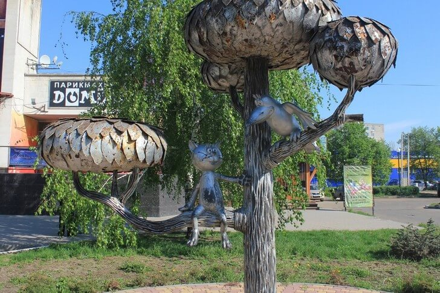

Памятник, увековечивший еще одного популярного героя – котенка из советского мультфильма, который, согласно сюжету, был обитателем Воронежа. Скульптуру создали И. Дикунов и Э. Пак в 2003 году. Автором идеи выступила ученица 11 класса, победившая на конкурсе лучших проектов. Фигура животного восседает на ветке дерева. Кажется, что котенок всецело занят беседой с любопытной вороной.
